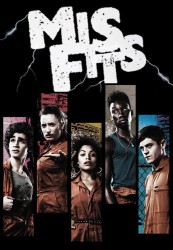

")
 
 IMDB-Wertung: 8.3 / 10
IMDB-Wertung: 8.3 / 10  Metascore:
Metascore: 
Als ein außergewöhnlicher elektrischer Sturm die Stadt trifft, passieren seltsame Dinge mit Kelly, Nathan, Curtis, Alisha und Simon, die sie nicht kontrollieren können. Sie haben keine Ahnung, dass sie sich in Superhelden verwandelt haben. Jeder hat eine Kraft - eine Kraft, die sie sich nicht aussuchen oder wünschen können – eine Kraft, die jede ihrer tiefsten und dunkelsten Ängste enthüllt…
Jahr: 2009
Dauer: 45 Minuten
FSK: 18
Land: England Studio: Channel 4 Television CorporationTonspuren: DD5.1 - ,
Untertitel: Deutsch,
Auflösung: 720p (1280x720) Größe: 1402 MB
Genre: Drama, Sci-Fi, Komödie, Fantasy, Liebe, TV-Serie
Regisseur: Tom Green, Jonathan van Tulleken, Tom Harper, Wayne Yip, China Moo-Young, Owen Harris, Alex Garcia Lopez, William Sinclair, Nirpal Bhogal, William McGregor, Dusan Lazarevic, Lewis Arnold, Lawrence Gough, Amanda Boyle
Drehbuch: Delmer Daves
Soundtrack:
Darsteller:
 Joseph Gilgun als Rudy Wade
Joseph Gilgun als Rudy Wade Shaun Dooley als Greg
Shaun Dooley als Greg Robert Sheehan als Nathan Young
Robert Sheehan als Nathan Young Craig Parkinson als Shaun
Craig Parkinson als Shaun Matthew McNulty als Seth
Matthew McNulty als Seth Ruth Negga als Nikki
Ruth Negga als Nikki Ruth Sheen als Maggie
Ruth Sheen als Maggie Josef Altin als Gary
Josef Altin als Gary Michelle Fairley als Louise Young
Michelle Fairley als Louise Young Lydia Wilson als Laura
Lydia Wilson als Laura Jamie Blackley als Matt
Jamie Blackley als Matt Dexter Fletcher als Mike Young
Dexter Fletcher als Mike Young Philip Rosch als Craps Dealer
Philip Rosch als Craps Dealer Justin Edwards als Roger
Justin Edwards als Roger Charlie Murphy als Grace
Charlie Murphy als Grace Kenneth Colley als Old Rudy 2
Kenneth Colley als Old Rudy 2Datei: X:\FSK18-Serien\Misfits\S01\Misfits S01E01 Das Gewitter.mkv seit 24.05.2017
Festplatte: FSK18
 Es gibt insgesamt 17 Filme in der Gruppe 'FSK18-Serien'
Es gibt insgesamt 17 Filme in der Gruppe 'FSK18-Serien'